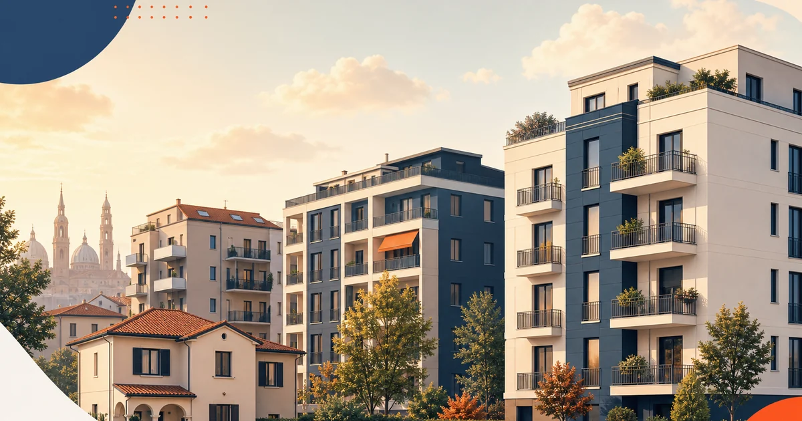
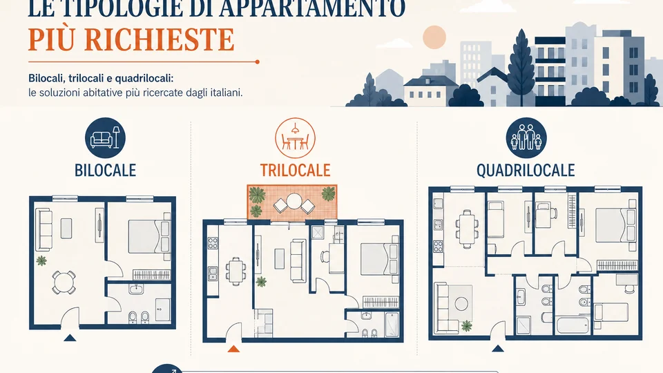

In sintesi
Il Veneto sta ampliando l'offerta di posti letto universitari nel Padovano, Vicenza e Venezia attraverso ESU, operatori privati (es. Camplus), fondi PNRR e strutture miste pubblico-privato. Migliaia di nuovi letti entrano nel ciclo 2025–2027, senza eliminare del tutto la tensione sul mercato libero.
Cosa può fare Righetto
Il quesito: ESU, Camplus e PNRR non coprono tutti: come orientarsi tra graduatoria e mercato libero?
- Piano parallelo maggio–agosto — Candidatura ESU (Sportello Studente su esu.pd.it) e ricerca sul libero senza bloccare la caparra finché i tempi bando lo consentono (servizio locazioni)
- Confronto costo totale — Canone + utenze + abbonamento TPL tra Padova, Vicenza e Mestre — evita risparmi illusori lontani dalle facoltà (zona universitaria Padova)
- Valutazione canone per chi affitta — Allineamento pre-asked season a FIMAA e Insights per appartamenti condivisi (valutazione gratuita)
- Contratto e convivenza — Modelli, registro, clausole coinquilino ed Erasmus (servizio locazioni)
Mediazione e compenso concordati in sede nel mandato — nessun listino percentuale online. Tel. 049.8843484 · consulenza gratuita.
Perché servono nuovi posti letto in Veneto
Padova, Venezia e Vicenza condividono crescita di iscritti universitari e limiti dello stock abitativo storico. Senza nuove camere in studentato, il mercato libero assorbe la domanda con canoni in salita — tema trattato in affitti Padova canoni 2026 e nelle rilevazioni Immobiliare.it Insights. La Regione Veneto coordina investimenti e convenzioni con atenei ed enti territoriali; l'ESU Padova resta riferimento per posti pubblici e graduatorie (esu.pd.it).
Pubblico, privato e PNRR: tre motori dell'offerta
| Canale | Caratteristiche | Esempio operativo |
|---|---|---|
| Pubblico ESU | Canone calmierato, graduatoria merito/reddito | Studentati storici e nuovi padiglioni Padova |
| Privato (Camplus e simili) | Residenze a gestione imprenditoriale, servizi integrati | Strutture vicino poli universitari e stazioni |
| PNRR / rigenerazione | Finanziamenti per housing studentesco e riuso edifici | Progetti urbani autorizzati in provincia, Vicenza, Venezia Mestre |
Padova: ampliamento stock e strutture miste
nel territorio convivono padiglioni ESU, residenze private e progetti di conversione ex uffici (es. torri Tribloc/Gozzi, trattati in articolo dedicato sul blog). Le strutture miste uniscono capitali privati e vincoli di accessibilità per studenti: canoni intermedi tra studentato puro e libero mercato. L'Università del Padovano partecipa a protocolli per prossimità ai dipartimenti e trasporti.
Per studenti fuori graduatoria ESU, l'effetto netto di nuovi letti è positivo ma graduale: ogni migliaio di posti libera pressione su quartiere, non azzera i picchi di settembre. FIMAA Veneto osserva che annunci in appartamento restano molto attivi fino a ottobre.

Vicenza e Venezia: stesso fenomeno, contesti diversi
A Vicenza l'offerta cresce con rigenerazione urbana e posti PNRR calmierati (vedi articolo Casa Querini/Saudino). A Venezia la complessità logistica spinge verso Mestre e terraferma: nuovi letti PNRR e convenzioni ESU mirano a trattenere studenti fuori dal mercato turistico-short term del centro laguna. ISTAT descrive il Veneto come regione con alta mobilità studentesca intra-regionale.

Come orientarsi tra graduatoria, residenza privata e mercato libero
- Iscriversi e monitorare bandi ESU Padova (e ESU territoriali per Vicenza/Venezia).
- Valutare residenze private con canone trasparente e regolamento scritto.
- Confrontare costo totale (canone + utenze + trasporti) con stanza in appartamento.
- Non firmare caparra sul libero finché non si conosce esito graduatoria se tempi compatibili.
- Conservare copia registrata contratto e ricevute caparra per tutela FIMAA/consulenza legale.
Righetto affianca famiglie e proprietari nel servizio locazioni; mediazione da concordare in sede, senza listini percentuali online. Supporto documentale su richiesta informativa preliminare, senza impegno.
Impatto sul mercato libero padovano
Immobiliare.it Insights segnala canoni stanza intorno a 490 euro: nuovi posti letto possono frenare ulteriori rialzi in periferia, non abbassare il centro storico. Proprietari di appartamenti condivisi devono restare competitivi su efficientamento energetico e manutenzione.
Trasparenza bandi e tempistiche 2026
Bandi ESU e PNRR hanno calendari pubblici: verificare sempre comunicati aggiornati, non screenshot obsoleti. Regione Veneto pubblica avanzamento opere su portali istituzionali.
Coabitazione e servizi nelle residenze nuove
Residenze private offrono spesso reception, studio e lavanderia; studentato ESU privilegia canone basso. Scelta dipende da budget familiare e autonomia studente. Strutture miste cercano equilibrio tra i due modelli.
Università della provincia e fabbisogno annuo
L'Università del territorio pubblica dati iscrizione e tassi fuori sede: la maggioranza non accede studentato ESU. Nuovi letti PNRR e privati riducono gap ma non lo chiudono — mercato libero resta essenziale per famiglie senza requisiti ISEE o fuori graduatoria. Incrociare domanda con canoni stanza Insights aiuta budgeting.
Camplus e standard di servizio
Camplus e operatori simili offrono contratti con servizi inclusi e durata flessibile per Erasmus. Canone superiore a ESU ma inferiore a combo singola premium più utenze imprevedibili. FIMAA segnala crescita segmento «student housing istituzionalizzato» in Veneto.
Regione Veneto: coordinamento territoriale
La Regione Veneto allinea bandi PNRR con piano casa giovani e mobilità. Progetti isolati senza collegamento TPL perdono efficacia: posti letto lontani da facoltà spostano costo su trasporti. ISTAT documenta spesa mobility studenti in crescita regionale.
Per orientamento operativo su contratti mercato libero parallelo agli studentati, il servizio locazioni Righetto resta punto di contatto — compenso mediazione concordato in sede, senza percentuali pubblicate online. Chi gestisce appartamento condiviso in Padova può richiedere valutazione canone allineata a FIMAA e Insights prima della stagione autunno.
Aggiornamento 2 luglio 2026. Fonti: ESU Padova, Regione Veneto, PNRR, FIMAA, Università locale.
Numeri regionali e gap domanda-offerta
La Regione Veneto ha messo in campo piani di ampliamento housing studentesco legati a PNRR e convenzioni con atenei. Non esiste un unico contatore pubblico aggiornato giornalmente, ma la somma di progetti approvati in città, Vicenza e Venezia indica migliaia di nuovi letti nel biennio 2025-2027. Il gap residuo alimenta mercato libero descritto in Immobiliare.it Insights.
ISTAT descrive mobilità giovanile veneta verso poli universitari: senza camere strutturate, famiglie sostenono canoni crescenti sul libero. Investimento pubblico-privato mira a stabilizzare accesso meritevole e reddito.
ESU Padova: procedure e trasparenza bandi
ESU pubblica graduatorie, requisiti ISEE e merito, scadenze domanda studentato. Ogni posto assegnato libera pressione marginale sul mercato; non sostituisce intero fabbisogno. Link ufficiale: esu.pd.it. Consigliamo di non abbandonare ricerca libera finché esito bando non è definitivo se tempi lo permettono.
Convenzioni ESU con residenze calmierate (Vicenza ~30% posti in progetti PNRR) uniscono accesso pubblico e gestione professionale. Percentuali vanno verificate bando per bando.
Operatori privati: Camplus e servizi integrati
Camplus e operatori analoghi offrono residenze con reception, studio, eventi e manutenzione centralizzata. Canone superiore a ESU ma inferiore a singola premium Portello in molti casi. Target: studenti internazionali e fuori sede che pagano per certezza contrattuale.
FIMAA osserva crescita contratti società-gestore con genitori garanti. Trasparenza su extra (pulizie, deposito, uscita anticipata) è critica in comparazione.
PNRR: tipologie intervento e tempi
Fondi PNRR finanziano nuova costruzione, riuso edifici e rigenerazione urbana (Tribloc Padova, Casa Querini Vicenza). Tempi cantieristici slittano spesso per vincoli paesaggistici e approvvigionamenti. Studenti entranti 2026 devono pianificare piano B sul libero fino a consegna chiavi.
Regione Veneto rendiconta avanzamento su portali istituzionali: verificare milestone ufficiali, non solo comunicati marketing operatori.
Strutture miste pubblico-privato
Modello misto combina requisiti accesso ESU su quota posti e gestione imprenditoriale su servizi. Canone intermedio e regolamento più stringente. Obiettivo policy: evitare gentrificazione studentesca pura e mantenere accesso merito/reddito.
Per proprietari privati, aumento offerta strutturata impone competitività su qualità e prezzo in appartamento condiviso.
Venezia: Mestre e terraferma
Studenti Ca' Foscari e IUAV affrontano costi laguna: nuovi letti a Mestre e Marghera riducono dipendenza da mercato turistico centro. Logistica actv pesa su scelta abitativa quanto canone.
Confronto con Padova non è diretto: offerta e trasporti differiscono. Articolo canoni Padova resta riferimento per capoluogo patavino.
Vicenza: PNRR calmierati e rigenerazione
Vicenza cresce con Casa Querini e bandi ESU — vedi articolo dedicato calmierati 2026. Domanda lavoro industriale convive con universitari: mercato locativo complesso.
Imprese edili e lavoratori fuori sede aggiungono domanda residenziale non studentesca in stesso comparto.
Impatto su proprietari padovani appartamento condiviso
Più posti letto non abbassano automaticamente canoni centro storico; possono stabilizzare periferia. Proprietari devono aggiornare arredo, fibra, efficientamento. Servizio locazioni Righetto supporta pricing allineato a comparabili.
Mediazione concordata in mandato; nessun listino percentuale online.
Checklist famiglia 2026
Monitorare bandi ESU aprile-luglio; parallelamente visitare appartamenti periferia tram; calcolare costo totale; evitare caparra senza contratto; conservare ricevute registrazione.
Cross-link affitti Padova 2026 e stanze Padova Insights.
Outlook e fonti
Secondo semestre 2026 vedrà prime consegne PNRR e apertura residenze green Tribloc. Mercato libero resterà rilevante. Fonti: ESU Padova, Regione Veneto, PNRR, FIMAA, ISTAT, Università padovano.
Per canoni stanza Padova aggiornati consultare Immobiliare.it Insights e articolo dedicato sul blog Righetto. Non citiamo titoli giornalistici come fonte primaria: solo enti e osservatori settore.
Governance e accessibilità residenze
Bandi PNRR includono requisiti accessibilità e gender balance negli spazi comuni. Residenze moderne devono superare barriere architettoniche rispetto a palazzi storici adibiti a studentato informale. Studenti con disabilità devono verificare camere adattate in graduatoria ESU e in offerta privata.
Regione Veneto pubblica linee guida housing giovani: trasparenza canone e servizi inclusi è obbligatoria negli bandi pubblici.
Padova numeri e fabbisogno residuo
Università del Padovano supera soglia iscritti che rende ogni incremento letti utile ma insufficiente da solo. Immobiliare.it Insights documenta canoni stanza 490 euro sul libero: studentato pubblico e PNRR agiscono su fasce meritevoli, non su tutta la platea. Famiglie classe media alta restano sul mercato.
Camplus e operatori privati colmano segmento intermedio con servizi e flessibilità contrattuale internazionale. FIMAA segnala crescita domanda alloggi certificati per studenti non UE.
Convenzioni ateneo-Regione
Protocolli tra Università della provincia e Regione Veneto definiscono obiettivi posti letto e criteri sostenibilità. Trasparenza rendicontazione PNRR è obbligo europeo: avanzamento lavori consultabile su portali istituzionali, non solo su social operatori.
Slittamenti cantieri impattano calendario accademico: piano B libero mercato resta necessario fino a consegna chiavi ufficiale.
Qualità gestione vs stock informale
Appartamenti non adeguati a norme antincendio convivenza restano sul mercato parallelo: bandi PNRR e ESU spingono qualità minima. Proprietario libero deve competere su sicurezza, fibra, efficientamento — non solo prezzo.
Servizio locazioni Righetto promuove contratti conformi e inventario consegna. Mediazione concordata in mandato.
Mobilità interregionale studenti
ISTAT descrive flusso studenti da Veneto orientale e Triveneto verso Padova e Venezia. Posti letto Vicenza e Mestre riducono pendolarismo lungo autostrada A4. Housing regionale va pianificato a rete, non per singolo comune.
Borse ESU e regionali non coprono sempre delta canone Insights: budgeting triennale consigliato.
Turismo e short term vs studenti Venezia
Centro Venezia subisce pressione affitti brevi: studentato Mestre-Marghera è priorità policy. Confronto con Padova non è automatico: logistics laguna incide quanto canone.
Regione Veneto coordina limiti e incentivi housing studentesco laguna — verificare delibere aggiornate.
Monitoraggio 2026-2027
Entro 2027 attendersi migliaia letti aggiuntivi somma Padova Vicenza Venezia se cronoprogrammi rispettati. Mercato libero resterà rilevante per centro Padova e facoltà periferiche.
Aggiornamento 2 luglio 2026: fonti ESU, Regione Veneto, PNRR, FIMAA, ISTAT, Università del territorio, Immobiliare.it Insights per canoni paralleli.
Costi nascosti e servizi inclusi
Residenza privata può includere pulizie, Wi-Fi, palestra; ESU no. Confronto canone headline vs costo totale mensile evita sorprese. FIMAA consiglia tabella comparativa scritta prima scelta.
Spese iscrizione universitaria e mensa ESU separati da canone camera: budget familiare integrato.
Gender policy e convivenza
Nuove residenze PNRR prevedono spazi sicuri e policy anti-discriminazione. Studentato storico mix genere per piano; residenze private offrono floor dedicati. Verificare regolamento before deposit.
Università del Padovano promuove inclusione: housing fa parte percorso accoglienza internazionale.
Digitalizzazione domanda posti letto
ESU e operatori privati migrano domande online con SPID: preparare documenti digitali in anticipo. Errori upload ritardano graduatoria — critico ad agosto.
Regione Veneto dashboard PNRR avanzamento opere: consultare trimestralmente.
Proprietari privati e regolamentazione
Crescita posti letto pubblici-privati non esenta proprietario da registro contratti e norme fiscali locazione. Cedolare secca o IRPEF da scelta consapevole con commercialista.
Righetto servizio locazioni per mandato conforme; mediazione concordata in sede senza listini online.
Sintesi policy housing Veneto 2026
Obiettivo regionale: aumentare posti letto accessibili senza sostituire mercato libero. ESU, Camplus, PNRR e PPP convivono; studente deve mappare opzioni entro luglio per anno accademico ottobre. Link utili: blog-affitti-padova-canoni-2026 e blog-stanza-universitaria-padova-canoni-2026 sul sito Righetto.
Fonti citate: ESU Padova, Regione Veneto, PNRR, FIMAA, ISTAT, Università della provincia, Immobiliare.it Insights. Aggiornamento 2 luglio 2026. Non usiamo titoli giornalistici come fonte primaria; solo enti e osservatori di settore.
Canoni Padova 2026Mediazione Righetto e uso delle fonti
Gruppo Immobiliare Righetto opera dal 2000 su 101 comuni del Padovano e del Veneto orientale, con oltre 350 immobili gestiti e 98% di soddisfazione clienti verificata (127 recensioni Google, media 4,9/5). I dati economici citati provengono da fonti istituzionali e osservatori di settore — Immobiliare.it Insights, FIMAA, ESU, ISTAT, Regione Veneto, Università del territorio, Edilcassa/Confartigianato Veneto dove applicabile. Non utilizziamo titoli di giornale come fonte primaria.
Il compenso di mediazione immobiliare si concorda in sede nel mandato di vendita o locazione: non pubblichiamo listini o percentuali online. Per valutazioni, locazioni studentesche, corporate housing o acquisto abitativo contattare l'agenzia via form in fondo pagina o telefono 049.8843484. Articolo aggiornato al 2 luglio 2026.
Domande frequenti

Consulente locazioni e housing studentesco — Righetto Immobiliare, Padova e provincia.